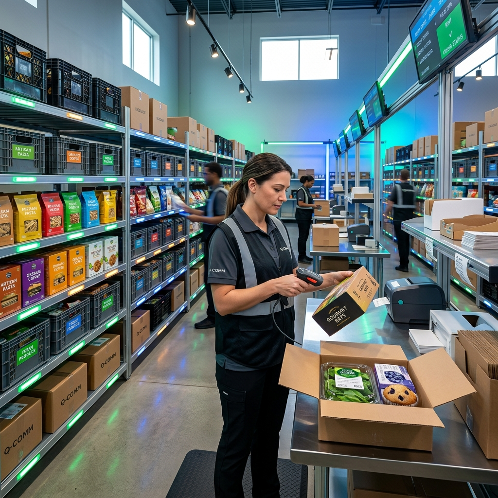

What is Contract Manufacturing and Why Do Businesses Choose It?
India's food brands are operating in a different environment than they were even two years ago. The market is bigger, the compliance bar is higher, and the channels driving growth — quick-commerce especially — move faster than a traditional factory build-out can keep up with. Against that backdrop, more food businesses are asking a version of the same question: does it still make sense to own a factory, or is there a smarter way to get product to shelf?
That question is exactly why contract manufacturing has moved from a niche operational choice to a mainstream growth strategy. Three forces are driving this in 2026: a fast-growing food processing market, tougher and more continuous compliance expectations, and a quick-commerce ecosystem that rewards speed over scale.
Contract Manufacturing Explained: The Core Business Model
At its core, contract manufacturing means a brand owns the product concept — the recipe, the positioning, the brand story — while a specialized manufacturer handles production, packaging, and often quality control. The brand never has to touch a production line directly.
This is a fundamentally different model from in-house manufacturing, where the brand also carries the capital expenditure, hires and manages production staff, builds its own compliance systems, and absorbs the time it takes to get a facility running.
The model fits particularly well for FMCG brands, nutraceuticals, sauces, spices, honey, and private-label food lines — categories where formulation consistency and packaging quality matter, but where building a dedicated factory for every SKU would be financially impractical.

Why Businesses Choose Contract Manufacturing in 2026
The strategic logic is straightforward: lower capital lock-in, faster launch cycles, easier scalability, and access to infrastructure that would otherwise take years to build internally.
India's food processing sector is projected to reach Rs. 47,13,350 crore (roughly US$535 billion) by the end of FY26, driven by rising consumption, exports, and government initiatives under the Make in India program. Growth at that scale creates real opportunity — but it also means more brands competing for shelf space and consumer attention, raising the stakes on launch speed and quality.
Capital Efficiency and Time to Market
Outsourcing production means a brand avoids the cost of factory land, plant construction, equipment, and the compliance overhead that comes with running a facility. For D2C and emerging FMCG brands, this is the difference between being able to test five product ideas or just one. It also changes the risk calculus: if a SKU underperforms, the brand hasn't sunk years of capital into dedicated infrastructure.
How 2026 FSSAI Rules Increase In-House Complexity
Regulatory change is another force reshaping this decision. In March 2026, the Food Safety and Standards Authority of India notified amendments that fundamentally restructure how food licenses work. The amendment redefines petty food businesses, streamlines registration and licensing norms, introduces indefinite validity of licenses subject to compliance, and establishes a risk-based system of inspections and audits.
Understanding the Indefinite Licensing Framework
- Suspension Risk: Licenses do not expire, but failure to submit annual returns leads to immediate suspension.
- Audits On-Demand: Authorities can order third-party audits at the operator's expense at any point.
- Strict Exit: Surrendering a license during factory closure is a complex 30-day legal process.
Quick-Commerce Is Forcing Asset-Light Manufacturing
Platforms like Blinkit, Zepto, and Instamart have changed the underlying economics of launching a food product — favoring compact pack sizes, fast replenishment cycles, and packaging built for dark-store handling and mobile-first discovery rather than traditional retail shelving.
The result is that brands increasingly need rapid SKU innovation rather than long, methodical factory planning cycles. A product idea that can't move from concept to dark-store shelf within weeks risks missing its moment entirely.
| Factor | Owned Factory | Contract Manufacturing (Nera Foods) |
|---|---|---|
| Capex Requirement | High (Land, Building, Equipment) | Zero (Pay per production run) |
| Launch Timeline | 12 to 24 Months | 2 to 4 Weeks |
| Compliance System | Build from scratch in-house | Pre-approved, active certifications |

Private Label Growth and Market Opportunity
Retailers, D2C brands, and distributors are increasingly using contract manufacturing to build out private-label portfolios faster than they could by investing in their own production assets. One industry estimate puts the global packaged food private label market at USD 252.48 billion in 2026, growing to roughly USD 411 billion by 2035.
This growth is powered by a shift in consumer preference toward high-quality, cost-effective alternatives, making premium packaging and certified processes vital components for private labels looking to capture market share.
Partner Evaluation Checklist
Select items as you review potential manufacturing collaborators:
Mapping the Model to Nera Foods
Nera Foods provides pre-approved, GMP-compliant contract packaging and manufacturing lines. Here is how our specialized capabilities align with your product catalog:

Sauces & Chutneys
Nera Foods' infrastructure is built to support stable, shelf-ready sauce production with strict viscosity controls and premium glass/PET bottling.

Spices & Blends
Our facility supports blended spice products, regional masalas, and premium seasoning lines, maintaining aroma retention and hygiene.

Premium Honey
We support purity-focused filtration, moisture control, and packaging designed around customer trust, with tamper-proof capping.

Supplements & Proteins
This line features GMP clean-room handling, precise blending, and robust quality testing for powders, tablets, and health products.
Ready to scale your brand asset-light?
Partner with Nera Foods for compliant, scalable contract food manufacturing and packaging. Get a quote within 24 hours.
Request QuotationConclusion
Contract manufacturing in 2026 isn't simply a cost-saving tactic — it's a strategic response to three forces converging at once: India's rapidly growing food-processing economy, a compliance landscape that now demands continuous operational discipline rather than periodic renewal, and a quick-commerce ecosystem that rewards speed above almost everything else.
For food brands trying to navigate all three simultaneously, asset-light production offers a genuinely faster, safer path to market — one where the heavy lifting of compliance, infrastructure, and production discipline is handled by a partner built for exactly that, while the brand stays focused on what only it can do: building a product people want and a brand people trust.
Sources: Food Safety and Standards Authority of India, Amendment Regulations 2026; India Brand Equity Foundation (IBEF); industry market research from Business Research Insights and other cited firms.